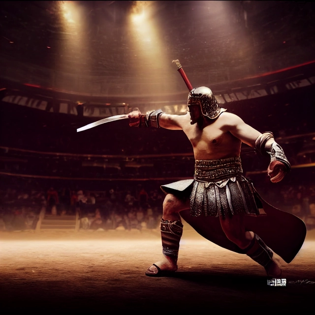

Felix slashed his sword through the air in triumph as his opponent crumpled to the ground. He looked up at the king in the crowd with a scowl, eager to take his life next. The king stood up from his throne, his eyes scanning the arena intently. He was a tall man with broad shoulders and piercing blue eyes that seemed to see through Felix's soul. "You have fought well, but your arrogance has blinded you," the king said, his voice booming across the arena. Felix gritted his teeth, unsheathing his sword once more. He knew what was coming, but he refused to back down. "Bring it on, coward," Felix spat, his sword ready to strike. The king's face remained impassive as he pulled out a slender rapier, the blade glinting in the sun. With a flick of his wrist, he lunged forward, the tip of his blade aimed straight at Felix's heart. Felix parried the thrust, his sword clanging against the king's rapier. He could feel the king's strength behind every strike, but he refused to falter. He swung his sword in a wide arc, trying to catch the king off guard. The king sidestepped the attack with ease and countered with a swift jab towards Felix's shoulder. Felix managed to block it, but he could feel a searing pain running through his arm. "You're too slow," the king taunted, circling around Felix and launching a series of rapid strikes. Felix tried his best to keep up, but he was quickly losing ground. Every time he blocked a strike, the king was already moving on to the next one. It was as if he was dancing a deadly waltz, and Felix was struggling to keep up with the pace. Finally, after what seemed like an eternity, Felix's sword was knocked out of his hand. The king's rapier was pointed at his throat, a hair's breadth away from piercing his skin. "You've lost," the king said, his voice cold and unyielding. Felix gritted his teeth, his heart pounding in his chest. He knew what was next. He dropped his sword to the ground and kneeled before the king. The king lowered his rapier, a small hint of satisfaction flashing in his eyes. He approached Felix, his boots crunching against the gravel. Felix could feel the cold metal of the rapier pressing against his back as the king stood behind him. "Rise," the king commanded. Felix got up slowly, his head down. He could sense the king's gaze on him, analyzing him. "You are a skilled fighter," the king said. "But you lack humility." Felix gritted his teeth, his fists clenching by his side. He had been humiliated in front of the entire kingdom, and he could feel the anger boiling inside him. "However," the king continued, "I see potential in you." Felix looked up, surprised. He had expected to be executed on the spot.
